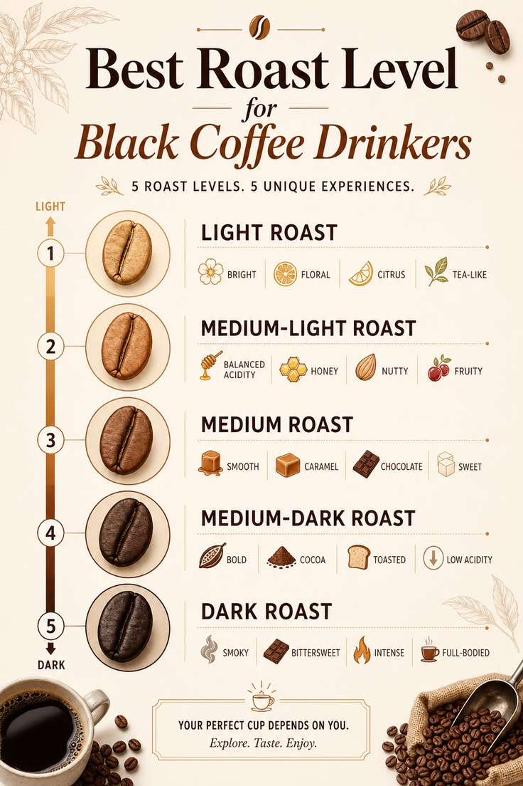

Menu Pilihan
Produk & Layanan Kami
Dari single origin pour over hingga signature cold brew, semua ada di sini


Dari pegunungan Gayo, Toraja, hingga Flores — kami menghadirkan cita rasa single origin terbaik Nusantara langsung ke cangkirmu.

Kopi Nusantara berdiri sejak 2019 dengan satu misi: memperkenalkan kekayaan kopi Indonesia kepada dunia. Kami bermitra langsung dengan petani kopi lokal di berbagai penjuru nusantara untuk memastikan kualitas biji kopi terbaik.
Setiap cangkir yang kami sajikan membawa cerita — tentang tanah yang subur, tangan petani yang merawat, dan proses roasting yang kami lakukan dengan penuh perhatian.
Kami berkomitmen menghadirkan pengalaman kopi terbaik dari hulu ke hilir
Biji kopi kami langsung dari petani terseleksi di Aceh, Toraja, Flores, Java, dan Bali tanpa melalui tengkulak.
Kami meroasting biji kopi setiap pagi untuk memastikan setiap sajian memiliki aroma dan rasa yang maksimal.
Semua biji kopi kami telah melewati proses cupping oleh Q-Grader bersertifikat dengan skor minimal 80 poin.
Cup & kemasan kami 100% biodegradable. Kami juga mengelola ampas kopi menjadi pupuk organik.
Tim barista kami berpengalaman dan bersertifikat internasional, siap meracik kopi sesuai selera Anda.
Pesan biji kopi atau cold brew online dan nikmati gratis ongkir untuk area kota. Kemasan vakum terjamin.
Dari single origin pour over hingga signature cold brew, semua ada di sini
"Kopi Gayo pour over-nya luar biasa! Baru pertama kali saya merasakan kopi seenak ini. Baristanya juga ramah dan mau menjelaskan proses seduhnya."
"Saya order biji kopi Toraja-nya untuk di-brew di rumah. Kemasannya rapi, masih sangat segar, dan aromanya mengisi seluruh ruangan. Worth every penny!"
"Tempatnya cozy banget, WiFi kencang, dan kopinya mantap. Jadi langganan buat WFH. Cold brew coconut-nya addictive!"
Kunjungi kedai kami atau pesan online. Kami siap meracikkan kopi terbaik untuk Anda setiap hari.